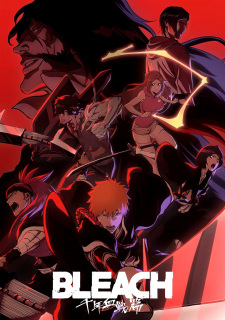

Informasi Anime
Genre: Action, Adventure, Supernatural
Ditayangkan: 11 Oktober 2022 Sampai 27 Desember 2022
Tahun Rilis: 2022
Jumlah Episode: 13
Durasi: 24 menit
Studio: Studio Pierrot
Platform Streaming:
Bleach: Sennen Kessen-hen
Setelah bertahun-tahun menghadapi berbagai ancaman, dunia Shinigami kembali diguncang oleh konflik terbesar: perang melawan Quincy
yang dipimpin oleh Yhwach, sosok kuat dengan rencana untuk menaklukkan dan merombak dunia Shinigami.
Ichigo Kurosaki, yang kini lebih matang dan kuat, kembali menghadapi pertarungan hidup dan mati demi melindungi teman-temannya dan
menjaga keseimbangan antara dunia manusia dan dunia roh. Bersama rekan-rekan lama dan sekutu baru, Ichigo harus menghadapi musuh
yang jauh lebih kuat, rahasia kelam masa lalu, serta kemampuan yang menuntut pengorbanan besar.
TBW menampilkan pertarungan epik, pengungkapan misteri dunia Shinigami, dan perkembangan karakter yang lebih kompleks, membuatnya menjadi
klimaks dari saga panjang Bleach yang telah menanti penggemar selama bertahun-tahun.
Character & Voice Actor

Ichigo Kurosaki
Morita Masakazu


Uryuu Ishida
Sugiyama Noriaki


Kenpachi Zaraki
Tachiki Fumihiko


Kisuke Urahara
Miki Shinichiro